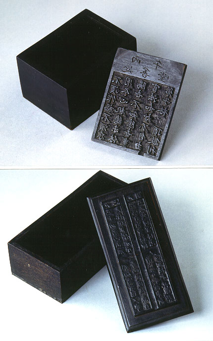

義助慰安婦 —— 李敖百件珍藏義賣藝術品（第85件） 品 名： H15. 台灣古籤盒 預估價： 2 萬 成交價： 3 萬 說 明： 台灣本土木雕品，印刷用版。是一個廟裡抽籤的版，有大小二組，盒子是現代的，蓋子是台灣古代的，上有一個很有趣的籤詩「不須作福不須求，用盡心機總未休，陽世不知陰世事，官法如爐不自由」，此乃台灣本土文化流傳的有趣文證。 
台灣本土木雕品，印刷用版。是一個廟裡抽籤的版，有大小二組，盒子是現代的，蓋子是台灣古代的，上有一個很有趣的籤詩「不須作福不須求，用盡心機總未休，陽世不知陰世事，官法如爐不自由」，此乃台灣本土文化流傳的有趣文證。